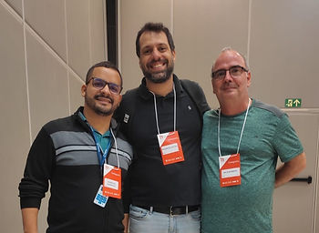
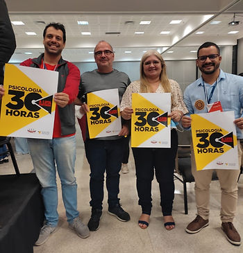

De 2 a 5 de junho de 2022, em Brasília, foi realizado o 11º Congresso Nacional de Psicologia (CNP) com debates e avaliações de 308 propostas provenientes dos Congressos Regionais do Brasil.
Todas propostas foram lidas, analisadas e debatidas. As aprovadas tornaram-se orientações de trabalho para os Conselhos Profissionais da Psicologia. Em meio às 308 propostas, havia duas propostas que versavam sobre a temática da Psicologia do Esporte. Entre os delegados presentes, estavam três associados da Associação Brasileira de Psicologia do Esporte (ABRAPESP): Rodrigo Almeida Damasceno do CRP 21 – PI, Rodrigo Acioli Moura do CRP 05 – RJ e Wilson Bispo Fonseca do CRP 19 – SE.
Primeira proposta da área foi analisada e aprimorada na discussão do grupo de trabalho e, posteriormente, aprovada em plenária. Texto final:
Proposta 024 (trazida pelo CRP 05 – RJ)
Criar espaços de debate e mobilização que tenham como referência as alterações na Lei Pelé que prevejam a obrigatoriedade de Clubes, Confederações, Comitês Olímpicos, Paraolímpicos, Surdolimpicos e outros, a prestarem assistência psicológica no contexto esportivo para além do futebol.
Segunda proposta aprovada sem ressalvas no grupo de trabalho e plenária. Segue abaixo:
Proposta 185 (trazida pelo CRP 19 – SE)
Fomentar a importância da Psicologia do Esporte e incentivar a presença da Psicóloga em políticas ligadas a esporte, lazer, saúde e cultura, pautando o esporte e lazer como direito humano e articulando ações via políticas públicas junto aos órgãos públicos competentes, organizações e associações esportivas e demais representações, levando para debate, inclusive, temas como questões de gênero, violência e preconceito no esporte, situações de abuso e outros temas emergentes.
Entenda o que é o CNP
O Congresso Nacional da Psicologia acontece a cada 3 anos e é realizado em etapas, iniciando-se com os Eventos Preparatórios, seguidos dos Pré Congressos, os COREPs e, por fim, o CNP. Segundo Rodrigo Acioli Moura, associado e ex-presidente da ABRAPESP:
“É o Congresso que une os profissionais e estudantes, ouve as principais demandas e sugestões, que quando aprovadas – esses pedidos, essas discussões, essas sugestões – passam a ser temas de orientação para as atividades dos Conselhos (…), talvez seja o momento mais democrático do Sistema Conselhos”
Os Eventos Preparatórios são encontros promovidos nos Conselhos Regionais, (como rodas de conversa, seminários e afins) para discussão de diversos temas a fim de estimular o surgimento de propostas, a partir das próprias experiências e vivências dos profissionais, para serem apresentadas como sugestões ao Sistema Conselhos.
Nos Pré Congressos são apresentadas propostas e selecionadas as que serão levadas ao Congresso Regional de Psicologia (COREP), assim como os profissionais que serão os delegados regionais.
No COREP, os delegados de cada Pré-Congresso aprovam as propostas que serão levadas para o Conselho Regional ou para o CNP. São escolhidos também, entre os presentes, os delegados que irão ao CNP (profissionais e estudantes).
Por fim, o CNP é o momento de reunir os delegados regionais para discutir as propostas vindas de todos estados brasileiros. As propostas são lidas, analisadas e debatidas, e as aprovadas viram orientação de trabalho para os Conselhos Profissionais da Psicologia.

Segundo o associado e delegado do CRP- 19, Wilson Bispo Fonseca, referindo-se ao 11º CNP:
“Foi mais uma vez a demonstração da democracia de nossa profissão. Foi muito satisfatório participar e colocar a nossa temática, Psicologia do Esporte, em pauta e tê-las acolhidas. Assim, ratificamos o nosso espaço e continuamos a lutar pelo reconhecimento da nossa área.”